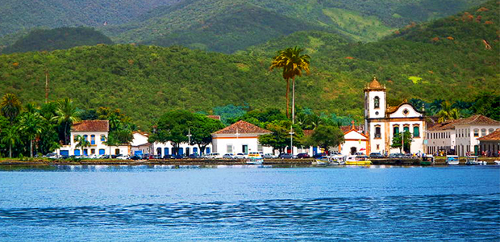

A data de fundação de Paraty diverge de historiador para historiador. Uns falam que em 1540/1560 já havia um núcleo devotado a São Roque no Morro da Vila Velha (hoje Morro do Forte); outros, de 1597, quando Martim Corrêa de Sá empreende uma expedição contra os índios Guaianás do Vale do Paraíba; alguns outros, de 1600, quando havia um povoamento de paulistas da Capitania de São Vicente; e alguns mais, 1606, quando da chegada dos primeiros sesmeiros da Capitania de Itanhahém que, acredita-se, venha a ser a origem do povoamento como, grosso modo, foi o sistema de Capitanias Hereditárias à base da exploração dos bens naturais, defesa e fixação do homem à terra no Brasil.
De todo modo, pode-se afirmar que, no início do século XVII, além dos índios guaianases, já havia um crescente grupo de “paratianos” estabelecidos por aqui.
Por volta de 1640 o núcleo chamado Paratii foi transferido para onde hoje se situa o centro histórico, em “légua e meia de terra entre os rios Paratiguaçu (hoje Perequê-Açu) e Patitiba” doadas por Maria Jácome de Mello. Esta, ao fazer a doação, teria imposto duas condições: que a nova capela fosse feita em devoção a Nossa Senhora dos Remédios e que se guardasse a segurança dos gentios guaianases.
Em 1660, o florescente povoado se rebela exigindo a separação de Angra dos Reis e elevação à categoria de Vila. Surgia em 1667 a Villa de Nossa Senhora dos Remédios de Paratii. Convém salientar que Paraty foi a primeira cidade brasileira a ter sua autonomia política decidida por escolha popular.
Decaindo a extração e exportação do ouro, em meados do século XVIII, Paraty vai perdendo importância. Com o ciclo do café, a partir do século XIX, a cidade revive, temporariamente, seus prósperos dias de glórias coloniais. A produção de pinga e derivados da cana também ajudou na economia local. Foi nesta época que Paraty virou sinônimo de pinga. No século XVIII, a cidade chegou a ter mais de 200 engenhos de pinga e casas de moenda.
Em 1870, devido à abertura de um novo caminho – desta feita ferroviário – entre Rio e São Paulo, através do Vale do Paraíba, a antiga trilha de burros pela Serra do Mar perdeu sua função, afetando de forma intensa a atividade econômica de Paraty como um todo.Um segundo fator de decadência do comércio e da cidade foi a Abolição em 1888, causando um êxodo tal que, dos 16 000 habitantes existentes em 1851, restaram, no final do século XIX, apenas “600 velhos, mulheres e crianças” isolando Paraty definitivamente do país por décadas.
Enquanto abriam-se estradas pelo resto do país, continuava se chegando a Paraty como na época Colonial: de barco, vindo de Angra dos Reis ou, a partir de 1950, por terra, via Cunha, em estrada que só comportava movimento quando não chovia e que aproveitava em parte o trecho da velha estrada do ouro e do café.
Este isolamento involuntário foi, paradoxalmente, o que preservou não só a estrutura arquitetônica urbana da cidade como também seus usos e costumes.
Fonte (Plano Estratégico do Turismo de Paraty 2002 – SEBRAE/RJ) 